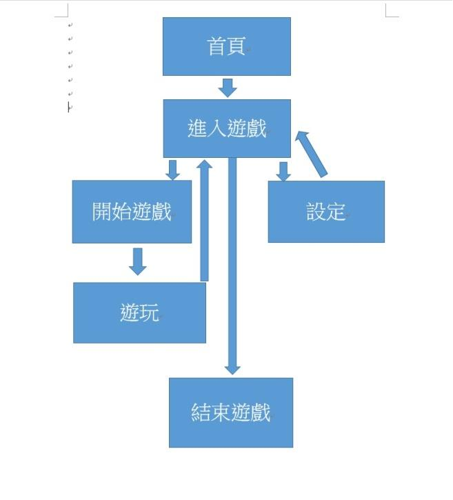
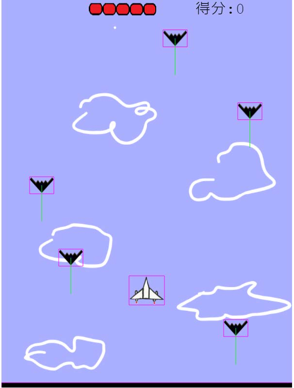

以第三 人稱視角 俯視圖方式 的一款 飛機射擊遊戲。
以第三 人稱視角 俯視圖方式 的一款 飛機射擊遊戲。
因為組員 四個人都喜歡飛機射擊此種類型的遊戲因而發想出要做一款好玩的飛行射擊遊戲，以此為動機。
以像素風格呈現的 第三人稱視角單機遊戲。
在即將爆發的三次世界大戰之際， 我國特務必須透過精湛的射擊技 巧和過人的駕駛技術，使我方能夠從數目眾多的敵軍中突破重圍，成功 將重要機密文件帶到他國， 獲求友邦的 援助。
玩家的初始滿血量 :5格。
敵方飛機種類三種。
殲滅敵軍飛機，在不讓血量歸 0 的情況下，達到分數順利過關。
從將分數不段累積，避免被敵軍殲滅。
透過滑鼠點擊 START 鍵，滑鼠點擊並長按我方飛機操控方向（上、下 、 左 、 右 ），按下空白鍵 來發射子彈消滅敵人。
方向：滑鼠（點擊飛機）控制上、下、左 、 右四個方位。
攻擊：按下空白鍵。

初始設定
◎備註說明
飛機種類會隨著關卡而增加，依序為第一關一種、第二關兩種、第三關三種。

遊戲音效包括背景音樂和特效音樂兩部分，其中背景音樂會以輕鬆一點的風格 配合畫風 為主，特效則有子彈射擊聲、爆炸聲、吃到血包聲和獲取寶箱聲等，一樣皆是以較輕鬆、舒服的方式來呈現。